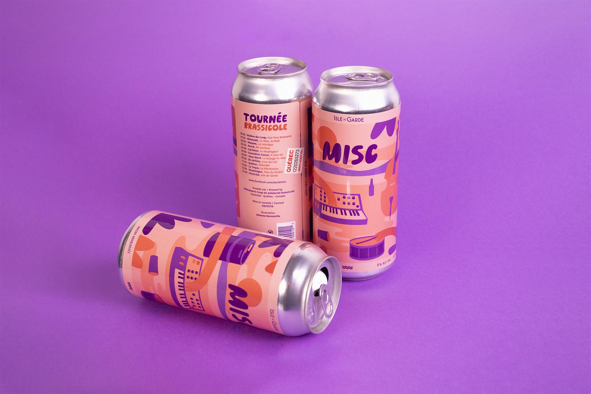
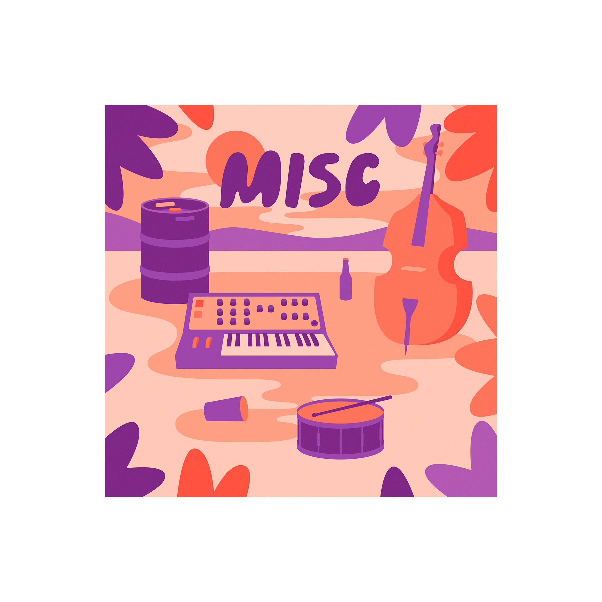
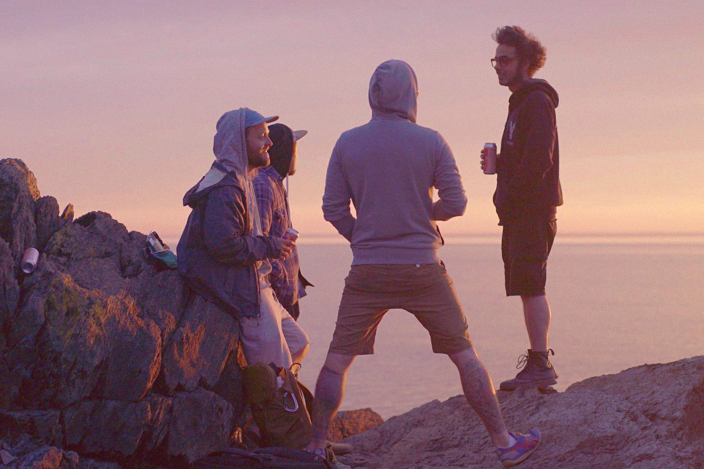
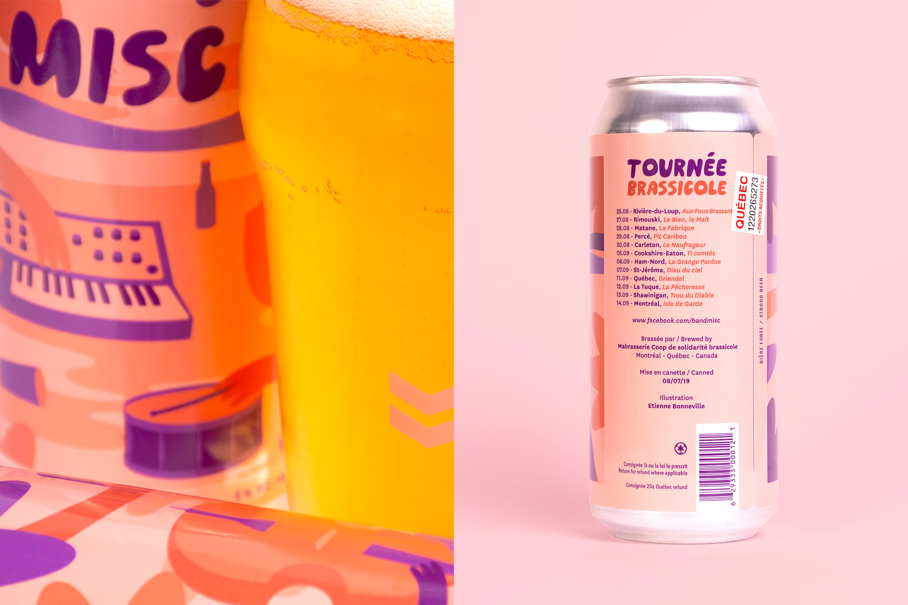
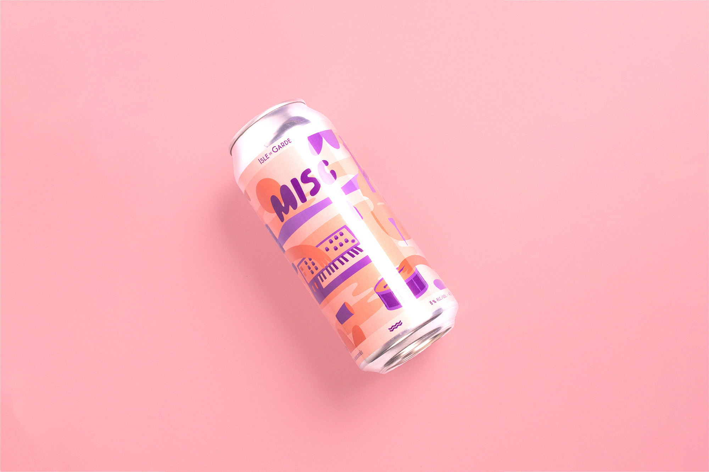
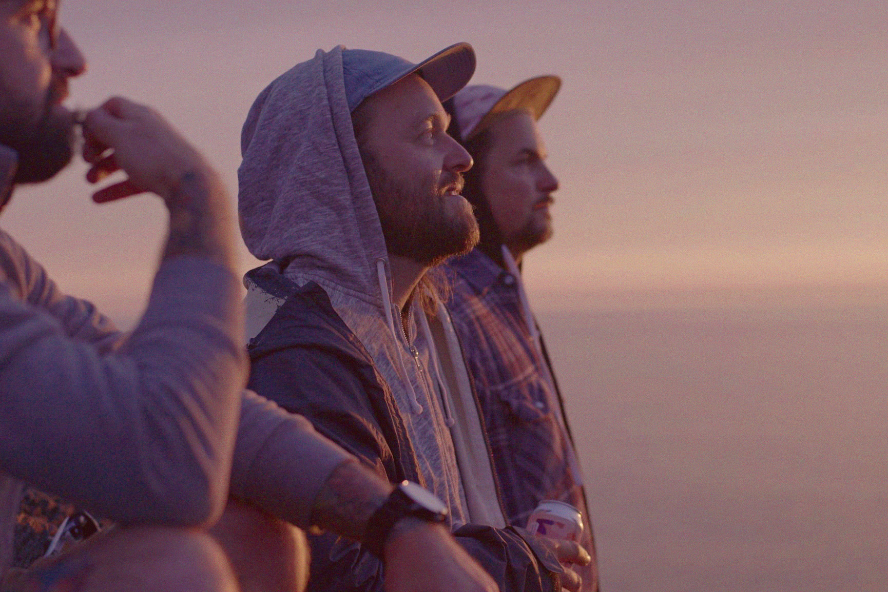

La Tournée Brassicole
Date
Septembre 2019
Client
Misc
Services
Design graphique
Illustration
Illustration
Organisée en partenariat avec la microbrasserie montréalaise Isle de Garde, La Tournée Brassicole du trio jazz Misc était une série de spectacles donnés dans différentes microbrasseries du Québec. Elle visait à amener le jazz là où les gens se trouvent, à rencontrer le public dans des lieux inspirants à travers la province, à faire de chaque spectacle une expérience unique et à mettre en valeur les brasseurs, les artisans et les artistes québécois. Pour faire la promotion de la tournée et rejoindre un public plus large, Misc voulait se détacher de l’esthétique habituelle du jazz avec une illustration plus « pop » et amusante. Pour l'occasion, l'Isle de Garde a décidé de concocter la saison houblonnée officielle de la tournée. Parce que boire une bonne bière et écouter un bon spectacle, ça sera toujours un bon plan!





